Chambres d'hôtes · Froyennes, Tournai
Jardindu Marais
Des chambres sous les toits, un grand jardin avec son kiosque et son étang, une piscine couverte, et le petit-déjeuner servi au bord de l'eau. Aux portes de Tournai.
4,967 avis Google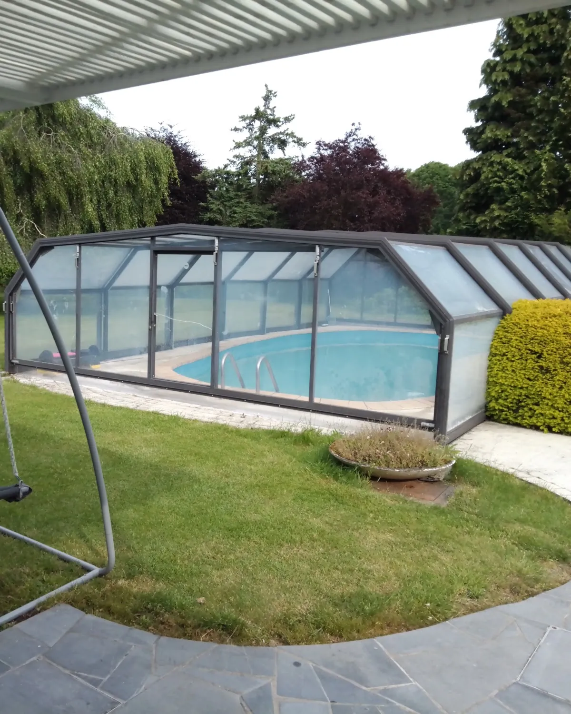
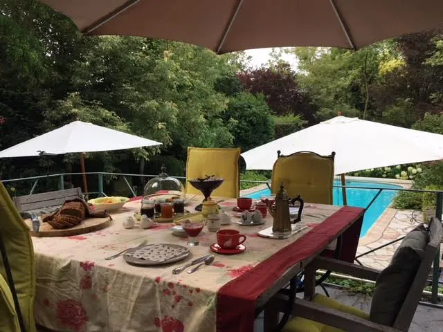
« Le top du top »richadd, sur Google
- 4,9 / 567 avis sur Google
- Piscinecouverte, au jardin
- Kiosqueet étang aux nénuphars
- 4 kmde la Grand-Place de Tournai
Le jardin
Un grand jardin, une piscine couverte, une belle terrasse.
Les mots sont ceux d'un client, et les photos les confirment : un kiosque blanc au milieu des haies taillées, un étang couvert de nénuphars, une piscine sous abri et une balancelle à l'ombre de la pergola. Et le petit-déjeuner peut se prendre dehors, sous les parasols, au bord de la piscine.
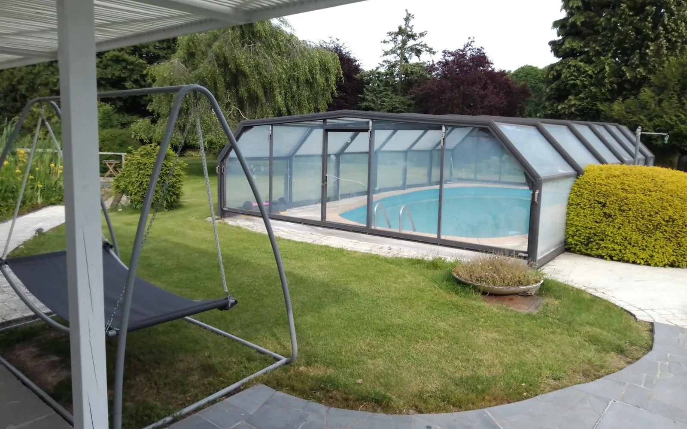
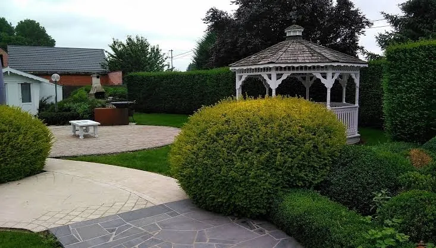
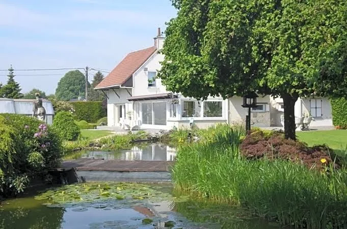
« […] ou profiter du jardin pour un mariage, une réception, une rencontre en famille, ce cadre agréable est l'endroit a ne pas manquer […] »Lorek D., avis Google
Les chambres
Sous les toits, derrière une verrière.
Murs blancs, pentes de toit soulignées de noir, une verrière d'atelier entre le lit et la salle de douche, du carrelage métro et une vasque suspendue. Calme, net, pensé pour bien dormir.
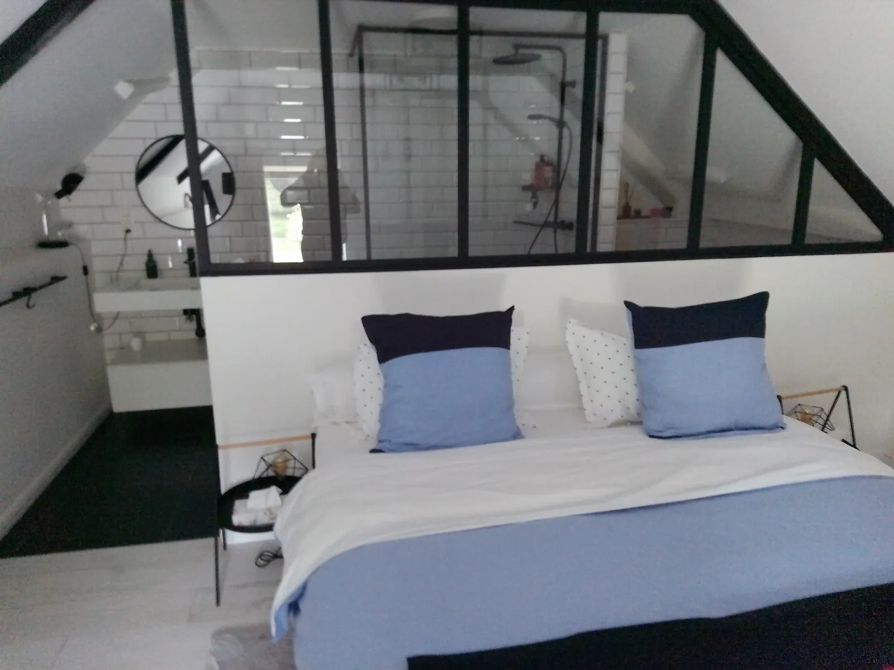
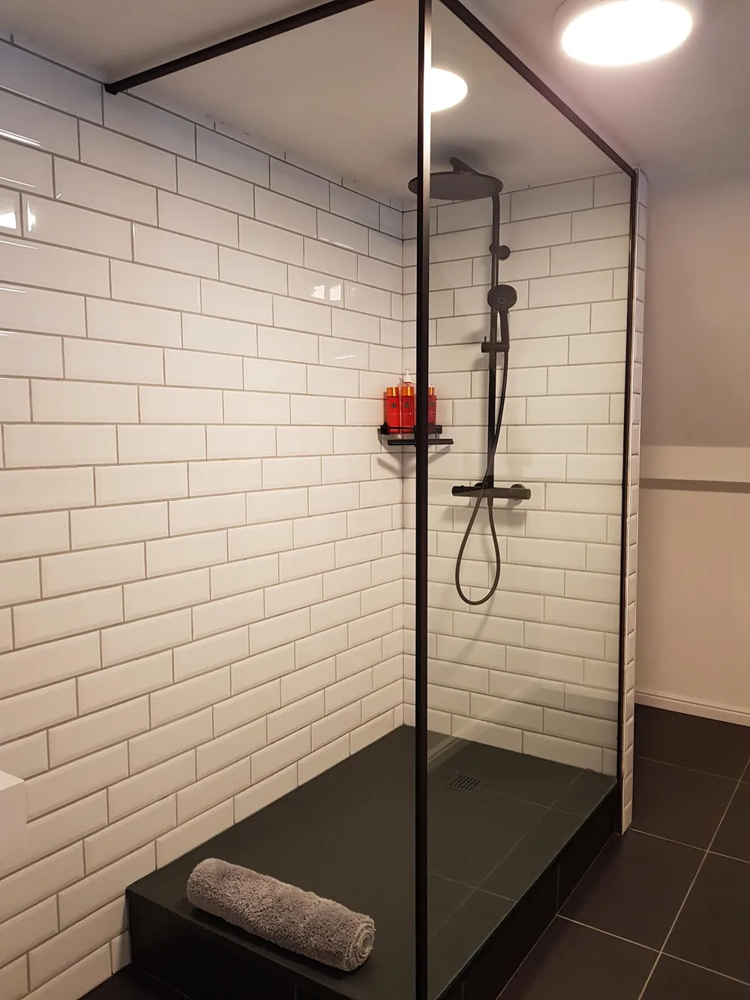
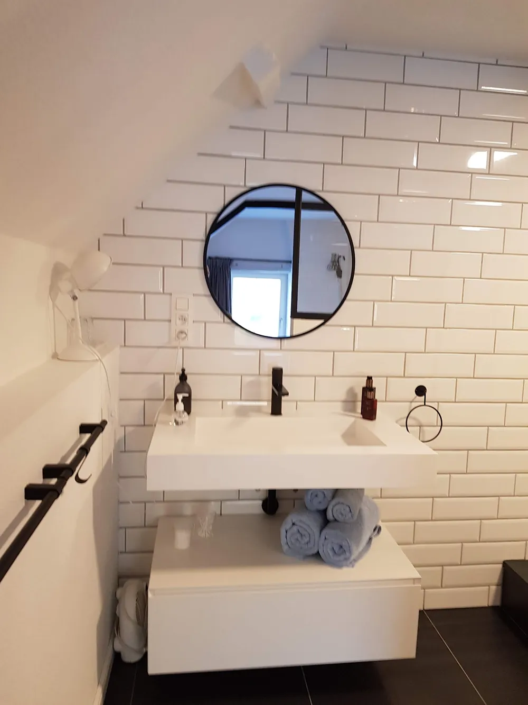
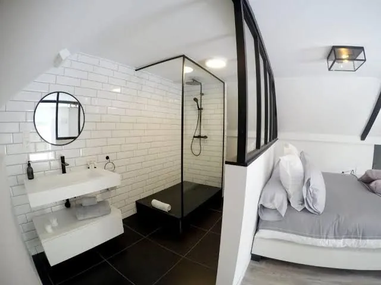
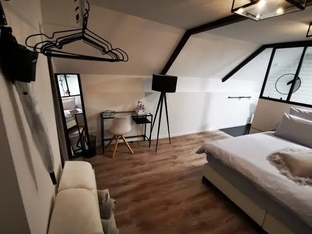
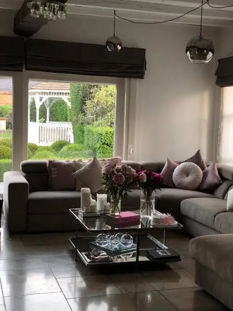
matelas literie chambre de qualitérichadd, venu 3 ou 4 jours en famille
la propreté et le calme de la chambrePascal D., avis Google
Décor magnifiquerichadd, avis Google
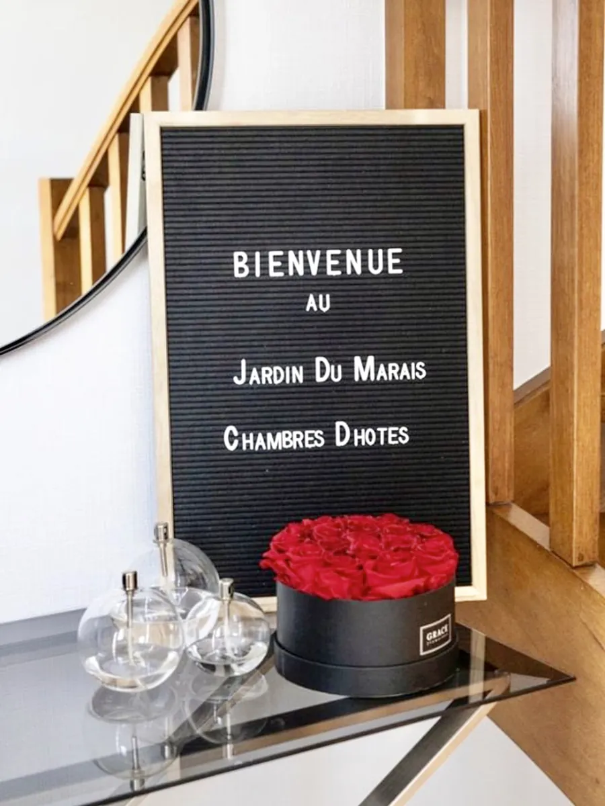
L'accueil
Une maison de famille, pas un hôtel.
Ici, c'est la propriétaire qui reçoit. Dans les avis, c'est elle qu'on cite en premier : « très accueillante, serviable et disponible », écrit Lorek ; « l'hôte est d'une gentillesse, ainsi que sa fille », ajoute richadd.
« Merci pour l'accueil chaleureux, la propreté et le calme de la chambre sans oublier l'excellent petit déjeuner. »
Pascal D., qui a donné la meilleure noteAvis Google
« C'est le top du top. »
4,9 sur 5 sur Google, sur 67 avis. Trois d'entre eux, cités mot pour mot.
Disponibilités
Vos dates, au calme.
Choisissez l'arrivée et le départ, dites combien vous serez : la propriétaire vous confirme la chambre et le prix pour vos dates.
Venir
Le long d'une drève, aux portes de Tournai.
- Grand-Place de Tournai4 km
- Grand-Place de Lille20 km
Distances à vol d'oiseau.
Téléphone
0479 37 98 18Adresse
Drève du Marais 8, 7503 Froyennes (Tournai)